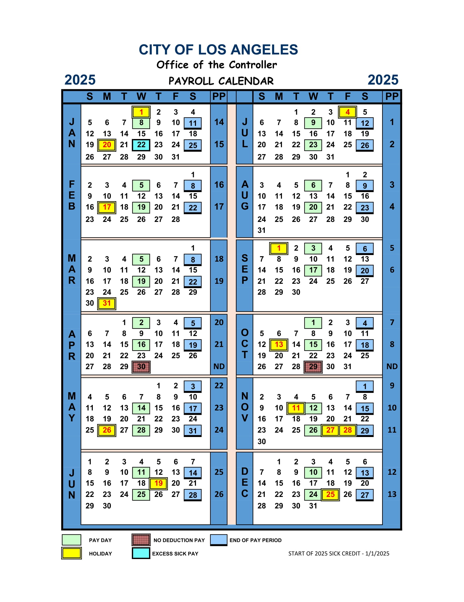
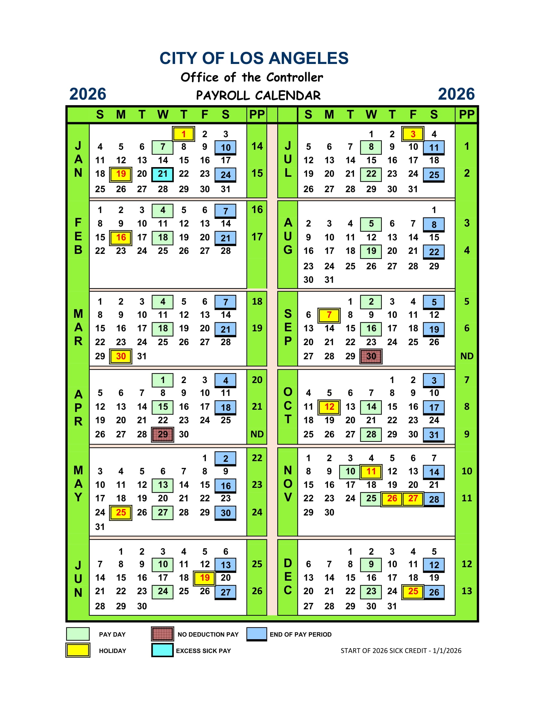

The Future of Web Development with ASP.NET Core & Blazor in .NET 10
10 Things I Do On Every .NET App - Scott Sauber - NDC Oslo 2025
Mads Torgensen - Everything You Need to Know About the Latest in C#
Top 9 AI Tools for .NET Developers in 2025
Front-End Development with Blazor
The Coolest Feature of .NET 10 is Here
The history of C Sharp
Kestrel web server in ASP.NET Core
Overview of ASP.NET Core
ASP.NET Documentation
Build Beautiful Web Apps with Blazor in .NET 8 - Full Stack Web UI with Oqtane & SSR
dotnet
Blazor fundamentals tutorial
The future of web development with ASP.NET core and Blazor
Why I choose Blazor over React in 2025
Modernize .NET apps in days with GitHub Copilot
"Hybrid Web and Desktop apps with .NET MAUI and Blazor" By Rachel Kang
Build your first Blazor Hybrid mobile & desktop apps with Visual Studio
Top 8 Blazor Component libraries in 2025
Understand ASP.NET Core fundamentals
Microsoft Learning!!!
 